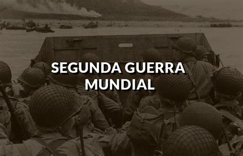
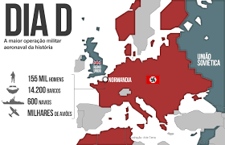

Segunda Guerra Mundial

Causas da Segunda Guerra Mundial
Entre os fatores que levaram à 2ª Guerra Mundial está o descontentamento da Alemanha com o desfecho da Primeira Guerra (1914-1918). A Alemanha foi declarada a única culpada deste conflito, teve suas Forças Armadas reduzidas e teve que pagar indenizações aos vencedores. Isto provocou fragilidade econômica, alta inflação e acúmulo de problemas sociais. Na década de 20, surgem movimentos radicais como o nazismo, liderado por Adolf Hitler, que conquistam parte da população. Hitler defendia o nacionalismo, a ideia que os arianos eram uma raça superior e as demais deveriam ser submetidas ou eliminadas, especialmente, os judeus, considerados culpados de todos os males. Isto gerou o chamado Holocausto, que foi o assassinato em escala industrial deste povo. Igualmente foram condenados e assassinados descapacitados mentais e físicos, comunistas, homossexuais, religiosos e ciganos.

O ataque à base naval estadunidense de Pearl Harbor, realizado em 7 de dezembro de 1941, marcou o início do conflito entre Estados Unidos e Japão durante a Segunda Guerra Mundial. Esse ataque foi uma tentativa fracassada de destruir a frota naval dos Estados Unidos que estava no Havaí. O ataque a Pearl Harbor fazia parte do projeto de expansão territorial que o Japão havia colocado em prática desde a década de 1930, quando havia iniciado a invasão da China. O imperialismo japonês foi consequência do crescimento do nacionalismo, do militarismo e da doutrinação que aconteceu no país após a Restauração Meiji e a reformulação do ensino. Essa doutrinação defendia que o Japão era uma nação superior às outras e que tinha direito de construir um grande império a partir da conquista de outros territórios por meio da guerra.

O Dia D
No dia 6 de junho de 1944, o famoso “Dia D” marcou o desembarque das forças aliadas, que cruzaram as turbulentas águas do Canal da Mancha em direção à Normandia. Mesmo com a forte resistência dos alemães, os comandados do general Dwight Eisenhower conseguiram promover a conquista do Norte da França e a recuperação da capital, Paris. Após a recuperação do território francês, a guerra em solo europeu foi marcada pela “corrida” até a cidade de Berlim.

Consequências da Segunda Guerra Mundial
A Segunda Guerra Mundial marcou profundamente o mundo contemporâneo. Os países europeus se encontravam destruídos e com sua população reduzida. Somente com a ajuda americana, através do Plano Marshall, foi possível a reconstrução europeia. Também foi concretizada a criação de um fórum internacional, a Organização das Nações Unidas (ONU), que seria um instrumento diplomático entre as nações para evitar a guerra. No entanto, o grande vencedor da contenda foram os Estados Unidos, que não tiveram seu território invadido (exceto o Havaí). Desta maneira, o país não acumulava grandes perdas materiais, comparado aos países europeus. A Europa também foi dividida em dois blocos econômicos de acordo com o país que libertou e ocupou as nações. Países do leste europeu como Polônia, Hungria e Romênia passara a sofrer influência da União Soviética e construíram governos de caráter socialista.
Já países como França, Bélgica e Holanda, se viram ocupadas pelos Estados Unidos e inauguram a época do Estado de Bem-Estar Social. No entanto, o grande vencedor da contenda foram os Estados Unidos, que não tiveram seu território invadido (exceto o Havaí). Desta maneira, o país não acumulava grandes perdas materiais, comparado aos países europeus. A Europa também foi dividida em dois blocos econômicos de acordo com o país que libertou e ocupou as nações. Países do leste europeu como Polônia, Hungria e Romênia passara a sofrer influência da União Soviética e construíram governos de caráter socialista. Já países como França, Bélgica e Holanda, se viram ocupadas pelos Estados Unidos e inauguram a época do Estado de Bem-Estar Social. O confronto entre as duas ideologias marcou o mundo inteiro e foi conhecido como Guerra Fria.

Com a negativa japonesa em se render, os americanos optaram por utilizar a bomba atômica na cidade japonesa de Hiroshima. O ataque aconteceu no dia 6 de agosto de 1945 e foi realizado de um bombardeiro B-29 chamado Enola Gay. O avião era pilotado por Paul Tibbets, que escolheu a ponte Aioi como alvo central. A bomba explodiu a mais ou menos 580 metros de altura e originou um pequeno sol, que espalhou um clarão pela cidade e uma onda de energia e calor que foi responsável pela destruição material quase completa da cidade de Hiroshima, além de resultar em 80 mil vítimas imediatas."A recusa japonesa fez com que os Estados Unidos utilizassem sua segunda bomba nuclear. A bomba deveria ter sido lançada na cidade japonesa de Kokura, entretanto, a condição climática da cidade fez com que os pilotos fossem para Nagasaki. A bomba de Nagasaki era 50% mais poderosa que a de Hiroshima, mas parte da cidade foi protegida pelos morros que possuía. Assim, a bomba em Nagasaki matou cerca de 40 mil pessoas imediatamente.

O fim da Segunda Guerra e a criação da Organização das Nações Unidas(ONU)
O triste e importante conflito terminou somente no ano de 1945, com a rendição da Alemanha e Itália. Com o final da guerra, em 1945, foi criada a ONU ( Organização das Nações Unidas ), cujo objetivo principal seria a manutenção da paz entre as nações. Inicia-se também um período conhecido como Guerra Fria, colocando agora, em lados opostos, Estados Unidos e União Soviética. Uma disputa geopolítica entre o capitalismo norte-americano e o socialismo soviético, onde ambos países buscavam ampliar suas áreas de influência sem entrar em conflitos armados.

A Tomada do Poder
Com a crise de 1929 o extremismo político tomou conta da Alemanha. Em 1930 Hitler tornou-se cidadão alemão. Em 1931, seis milhões de desempregados engrossavam as fileiras do Partido Nazista. Nas eleições legislativas de 1932 os nazistas elegem 230 deputados. Nas eleições presidenciais, o marechal Hindenburg foi reeleito com 19 milhões de votos, mas Hitler obteve 13 milhões. Em 1933, em meio a uma séria crise política, o presidente Hindenburg nomeou Hitler chanceler.
Terror e Ditadura
Em apenas 23 meses, numa sucessão de golpes de força, atos ilegais e assassinatos, Hitler instalou sua ditadura pessoal. Com a autorização do presidente, dissolveu o Parlamento. Convocou as SA e SS. Na campanha para novas eleições, vários líderes opositores foram assassinados. Os nazistas incendiaram o Parlamento e culparam os comunistas. A pena de morte foi restabelecida. A alegada conspiração comunista fez com que os nazistas conquistassem 44% dos votos. Os 81 comunistas eleitos foram excluídos e em 23 de março Hitler obteve o voto de plenos poderes.
O Führer (líder) começou a aplicar o programa nazista. Em toda a Alemanha houve 3 mil assassinatos. Outros opositores juntaram-se a comunistas e judeus nos campos de concentração recém abertos, como Dachau e Buchenwald. Hindenburg morreu no fim de 1934, Hitler acumulou as funções de chanceler e presidente. Todos os funcionários e oficiais das forças armadas deveriam prestar-lhe juramento pessoal de fidelidade.
Era o início do “Terceiro Reich” (III Império Alemão). A bandeira do partido, com a suástica, passou a ser a da Alemanha. Em 1935, a Alemanha reiniciou sua produção de armamentos e restabeleceu o serviço militar obrigatório. Hitler iniciou seus objetivos expansionistas. Aproximou-se da Itália de Mussolini, oferecendo ajuda econômica. Em maio de 1938, o exército alemão invadiu a Áustria. Em 1939, desrespeitando o acordo de Munique, ocuparam a Checoslováquia. No dia 1 de setembro invadiu a Polônia, onde instalou um governo geral e iniciou a perseguição aos judeus.

Hitler e a Segunda Guerra Mundial
Após a invasão da Polônia, pelo exército alemão, a Inglaterra, aliada da Polônia, declarou guerra à Alemanha. A França, aliada da Inglaterra fez o mesmo, desencadeando a Segunda Guerra Mundial (1939-1942). A partir de abril de 1940 a Alemanha, sob o comando de Hitler, avançou em direção à Europa Ocidental, conquistando a Dinamarca, a Noruega, os Países Baixos, a Bélgica, e a França. A Inglaterra enfrentava violentos ataques da aviação alemã. Em diversos países conquistados, o regime nazista construiu dezenas de campos de concentração, e em muitos deles era praticado o holocausto – o extermínio em massa de milhões de judeus, que depois de mortos em câmaras de gás, eram incinerados em fornos construídos para essa finalidade. O maior deles foi o de Auschwitz, na Polônia.
Em 1941, rompendo o pacto que assinou com Stalin, o exército de Hitler invadiu a União Soviética. Os Estados Unidos já ajudava indiretamente a Inglaterra e a França, mas em 1941, após o Japão atacar a base norte-americana de Pearl Harbor, no Pacífico, o país entrou na guerra formando o grupo dos aliados (Inglaterra, França, União Soviética e Estados Unidos). Em todos os países ocupados pelos nazifascistas, organizava-se a “Resistência”, uma associação clandestina que procurava paralisar o inimigo por meio de sabotagem e ataques de surpresa.
Em 1943, a batalha de Stalingrado, na União Soviética foi a primeira grande derrota das tropas alemãs. No dia 6 de junho de 1944 – o dia D, a frente aliada desembarcou na Normandia, Norte da França, anulando as forças de Hitler, era mais um passo para a derrota alemã. A frente do Leste, composta pelo Exército Vermelho soviético, foi a primeira a chegar a Berlim, dando o golpe final sobre o Terceiro Reich. Poucos dias antes da rendição final (8 de maio), Hitler que estava refugiado em um bunker em Berlim, suicidou-se com um tiro de pistola, acompanhado de sua mulher Eva Braun, que se envenenou. Hitler suicidou-se em Berlim, Alemanha, no dia 30 de abril de 1945, porém seu corpo nunca foi encontrado.

Caso o Vídeo não abra, clique aqui.
Bibliografia
Fontes utilizadas
- https://www.todamateria.com.br/segunda-guerra-mundial/
- https://brasilescola.uol.com.br/historiag/meses-finais-segunda-guerra-mundial.htm
- https://www.todamateria.com.br/segunda-guerra-mundial/
- https://www.todamateria.com.br/segunda-guerra-mundial/
- https://brasilescola.uol.com.br/historiag/bombas-atomicas-hiroshima-nagasaki.htm
- https://www.portalescolar.net/2011/05/segunda-guerra-mundial-inicio-causas.html
- https://www.ebiografia.com/adolf_hitler/
- https://www.todamateria.com.br/segunda-guerra-mundial/